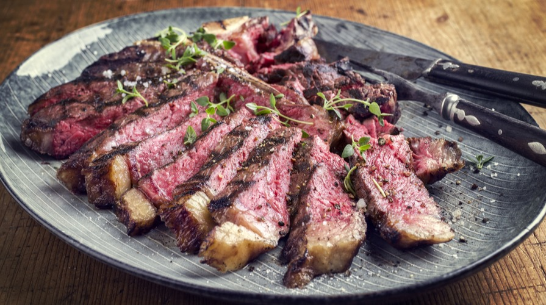

Bisticca alla Fiorentina
(Florentine Steak)
This is a classic Italian dish served in many Florentine restaurants.
Originating from Florence, Tuscany, this 3-pound porterhouse steak
has garnered worldwide recognition.
Staying true to its classical roots,
the recipe demands simple yet refined ingredients such as Mediterranean
sea salt and a light brush of olive oil, then grilled to perfection.

1 ingredients
- 3 pound Porterhouse steak
- 2 tablespoons of extra virgin olive oil
- 1 tablespoon of Mediterranean sea salt
- Lemon wedges (optional for serving)
2 Preparation:
- Take the steak out of the refrigerator and let it come to room
temperature for about an hour before cooking.
- Preheat your grill to high heat. The grill should be very hot to
achieve a good sear on the steak.
3 Grilling
- Grill steak over direct head for 5-7 minutes each side, or until
internal temperature reaches 120-125F
- For grill marks and nice crust, avoid moving the steak once on the grill
4 Resting
- Once the steak reaches your desired doneness, remove from grill and
allow it to rest for 5-10 minutes to let internal juices redistribute.
5 Serving
- Slice the steak against the grain for tenderness
- Serve with lemon wedges on the side for fresh burst of flavor
Enjoy your Bistecca alla Fiorentina with a sie of roasted vegetables, a fresh salad,
and a glass of Tuscan red wine for an authentic dining experience!